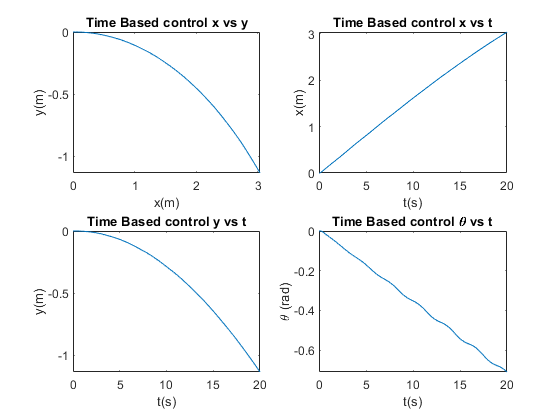
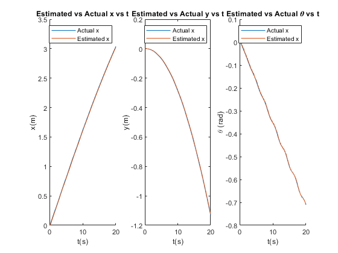

Project 1
Contents
2c
time = yout{1}.Values.Time;
x_data = yout{1}.Values.Data;
y_data = yout{2}.Values.Data;
theta_data = yout{3}.Values.Data;
subplot(2,2,1)
plot(x_data, y_data)
title('Time Based control x vs y')
xlabel('x(m)')
ylabel('y(m)')
subplot (2,2,2)
plot(time,x_data)
title('Time Based control x vs t')
xlabel('t(s)')
ylabel('x(m)')
subplot(2,2,3)
plot(time,y_data)
title('Time Based control y vs t')
xlabel('t(s)')
ylabel('y(m)')
subplot(2,2,4)
plot(time,theta_data)
title('Time Based control \theta vs t')
xlabel('t(s)')
ylabel('\theta (rad)')

Problem 2d
time = yout{1}.Values.Time;
x_data = yout{1}.Values.Data;
y_data = yout{2}.Values.Data;
theta_data = yout{3}.Values.Data;
x_data_est = yout{6}.Values.Data;
y_data_est = yout{7}.Values.Data;
theta_data_est = yout{8}.Values.Data;
subplot (1,3,1)
hold on
plot(time,x_data)
title('Estimated vs Actual x vs t')
xlabel('t(s)')
ylabel('x(m)')
plot(time, x_data_est)
legend('Actual x', 'Estimated x')
hold off
subplot(1,3,2)
plot(time,y_data)
hold on
title('Estimated vs Actual y vs t')
xlabel('t(s)')
ylabel('y(m)')
plot(time, y_data_est)
legend('Actual x', 'Estimated x')
hold off
subplot(1,3,3)
hold on
plot(time,theta_data)
title('Estimated vs Actual \theta vs t')
xlabel('t(s)')
ylabel('\theta (rad)')
plot(time, theta_data_est)
legend('Actual x', 'Estimated x')
hold off
